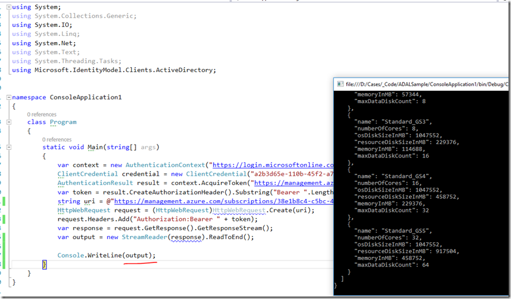

| Method | Request URI |
| GET | https://management.azure.com/subscriptions/{subscription-id}/providers/Microsoft.Compute/locations/{location}/vmSizes?api-version={api-version} |
- RDFE end point will be some like this - string uri = @https://management.core.windows.net/xxx-c5bc-4xxxxxd/services/hostedservices/cloudpanther;
- ARM end point - https://management.azure.com/subscriptions/xxxx-cxx-xxxxx/providers/Microsoft.ClassicStorage/osImages?api-version=2016-04-01;
-
Create an Active Directory application
-
Get client id and authentication key
-
Get tenant id
-
Set delegated permissions
-
Assign application to role
Step2:-
using System; using System.IO; using System.Net; using Microsoft.IdentityModel.Clients.ActiveDirectory;
namespace ConsoleApplication1 { class Program { static void Main(string[] args) { var context = new AuthenticationContext("https://login.microsoftonline.com/+ "your_tenantid"); ClientCredential credential = new ClientCredential("your_client_ID", "your_client_secret"); AuthenticationResult result = context.AcquireToken("https://management.azure.com/", credential); var token = result.CreateAuthorizationHeader().Substring("Bearer ".Length); string uri = @"https://management.azure.com/subscriptions/<your_subscription_Id>/providers/Microsoft.Compute/locations/Southeast Asia/vmSizes?api-version=2015-05-01-preview"; HttpWebRequest request = (HttpWebRequest)HttpWebRequest.Create(uri); request.Headers.Add("Authorization:Bearer " + token); var response = request.GetResponse().GetResponseStream(); var output = new StreamReader(response).ReadToEnd(); Console.WriteLine(output); } } } P.s:- I have used Adal 2.28.2.795 to avoid async complexities. on executing, {kind=link}